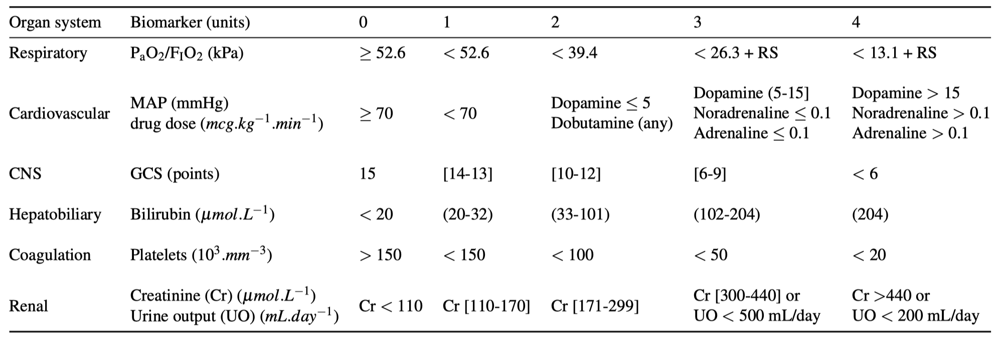
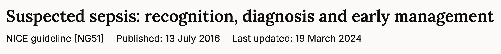
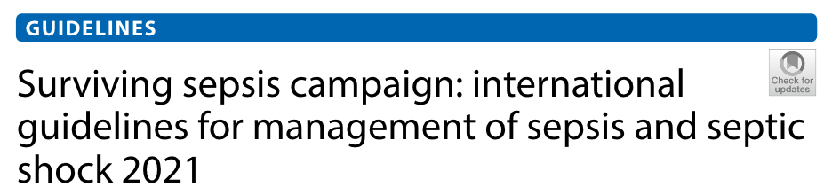

Sepsis Hysteria: Part II
A practical approach to getting it right
![]()
ST8 in Anaesthesia & Intensive Care Medicine
2025-01-28
Part 1…
- We reviewed the “sepsis-six” and its (lack) of evidence.
- Sepsis is a complex and unsolved problem.
- We should be warey of simple answers to complex problems.
- Objectives for today:
- Define sepsis and understand its historical context.
- Consider sepsis as a hetrogenous syndrome.
- Understand the gap between infection and sepsis and what fills it.
- Review management and best practices in “early” sepsis.
Disclaimer: any presented cases are entirely fictional.
History & Definitions
- Sepsis (1992) Bone et al.(1)
- Consensus definition for: SIRS, sepsis, severe sepsis, septic shock.
- \(\text{Sepsis} = \text{SIRS} + \text{Infection}\)
- Sepsis 2 (2001) Levy et al.(2)
- Consensus defintion: unchanged. Expanded some diagnostic criteria.
- Noted: SIRS insensitive and non-specific.
- Sepsis 3 (2016) Singer et al.(3)
- Empiric defintiion
- \(\text{Sepsis} = \text{SOFA} + \text{Infection}\)
- “Sepsis” retired. “Severe sepsis” = “sepsis”.
- Sepsis: 10% mortality. Organ dysfunction
- Septic shock: 40% mortality; Organ failure.
Definitions
Sepsis is a life threatenin organ dysfunction caused by a dysregulated host response to infection
Singer et al.(3)
- Infection
- Dysregulated host response
- Organ dysfunction (and failure)
- Life threatening
Organ Failure
Pathophysiology
- It’s… complicated
- DAMPS and PAMPS
- Vasoplegia and mitochondrial failure
Immune and Cellular
- Pathogen associated molecular patterns (PAMPs): well conserved foreign cellular apparatus e.g. endotoxin (lipopolysaccharide).
- Identification of PAMPs by: dendritic cells, macrophages etc.
- Pattern recognition receptors (PRRs); toll-like receptors
- Inflammatory mediators are released: TNF-alpha, IL-1 and IL-6.
- These recruit and activate polymorphonuclear leukocytes (PMNLs).
- PMNLs arrive at the site of infection to release inflammatory mediators designed to kill foreign microbes.
- Damage associated molecular patterns (DAMPs): host material like mitochondrial DNA released during cellular injury (“friendly fire”).
- PRRs assemble into molecular complexes: inflammasomes
- Inflammasomes involved in secretion of the highly potent cytokines IL-1\(\beta\) and IL-18 (triggering cellular apoptosis)
Immune and Cellular
- The net effect:
- Increase number, lifespan and activation of innate immune cells.
- Induce hepatic acute phase proteins: complement and fibrinogen
- Trigger neutrophils to release extracellular traps (NETs)
- Upregulate tissue factor expression by blood monocytes (immune mediated thrombosis)
- So far… this is all perfectly normal…
Early Damage Pathway
- Reactive Oxygen Species (ROS) damage cellular proteins and DNA.
- Mitochondrial function impaired; bioenergenic failure.
- Widespread thrombosis: microvascular flow dysfunction with organ failure.
- A number of negative feedback loops begin to amplify:
- Cellular ischaemia
- Intracellular/mitochondrial dysfunction
- Lactataemia
- Self sustained cytokine production and inflammatory dysregulation.
Downstream Sequelae
- Cardiovascular:
- Myocardial dysfunction
- Vasoplegia
- Increased vascular permeability
- Respiratory:
- V/Q mismatch
- ARDS
- Renal:
- reduction in filtration rate regardless of haemodynamics.
- AKI
- Neurological:
- Sepsis encephalopathy
- Gut:
- Oedema and bacterial translocation.
- Impaired hepatic microbial clearance of the portal system.
- Pancreatic autodigestion.
- Liver:
- Impaired hepatocyte clearance of bilirubin and cholestasis
- Haematological:
- DIC
- Pancytopaenia
- Musculocutaneous:
- Sarcopenia and ICU-Acquired Weakness
Is it sepsis?
Is it sepsis?
An 85 year old patient presenting to the A&E with 3 days history of myalgia and non-specifc deterioration; “off legs”.
Initial observations: SpO2 not-recordable as patient moving too much. BP 110/75. HR 95 sinus. RR 20. Patient confused and agitated, temp 36.4.
Initial labs: WCC 10.5, Plts 33, CRP 208, INR 3.1, Fibrinogen 85.
Is it sepsis?
A 35 year old with a 3 day history of cough productive of green sputum. Now feels SOB so took self to A&E. Otherwise well.
Initial observations: SpO2 78% RA. RR 35. Febrile 38. HR 110. BP 135/85.
Initial labs: WCC 14, CRP 85
VBG: Lactate 0.8
Is it sepsis?
A 17 year old with a 36 hour history of migratory RIF pain. Parents brought to A&E.
Initial observations: SpO2 99% RA. RR 20. Febrile 38. HR 110. BP 135/85.
Initial labs: WCC 14, CRP 85
VBG: Lactate 0.8
Sepsis as a Syndrome
- Not always immediately clear if a severe infection is sepsis
- Sepsis is not a single disease
- Extremely heterogeneous
- Unified by common themes
- The microbial zoo:
- Predators: Group A Strep, Staphylococcus Aureus, Neisseria meningitidis
- Cohabitants: Lot’s of others
Paradox of Early Treatment
- Sepsis was necessarily redefined: SOFA
- But this creates a vacuum:
- What do we do before they become septic?
- Can we prevent it?
- When does someone “become” septic?
- Proper sepsis, especially if vulnerable, is an emergency
- If everything is an emergency, nothing is.
How the void was filled
- “Red flag sepsis”
- Sepsis screening
- Identify different populations
- Criticisms of “missed sepsis” often totally unfounded
- Asking for “pre-sepsis” not “early sepsis”.
Practical Advice
- Clarify potential source of infection:
- Different for new admissions vs. inpatients
- “Septic screen”?… “Infection Inquest”
- Clarify organ dysfunction:
- Which organs are effected and how?
- Culture before ABx wherever possible.
- Sputum, urine, CSF, pus etc.
- Blood cultures: Aerobic first, 10 mL each.
Practical Advice
- Source control, source control, source control.
Practical Advice
- Source control, source control, source control.
- Give ABx considering the likely source.
- Investigations (including imaging) directed to find source.
- 20-30 mL/Kg: fluids for hypotension
- Call the ICU
- Accept when patients are no longer fluid responsive
- Refractory lactataemia likely doesn’t reflect hypovolaemia
- Review your patient often. Get help and escalate.
Our Turn
- Organ support: buys time
- Don’t cause harm: Lung protective ventilation. Catheter care etc.
- Some potential treatments:
- Albumin
- NorAdrenaline, Vasopressin
- Methylene Blue
- Steroids
Sepsis Mimics
- Autoimmune: Vasculitis.
- Traumatic: SIRS following polytrauma.
- Vascular
- Pulmonary Embolus
- Intestinal Ischaemia.
- Hypovolaemia.
- Cardiogenic Shock: MI etc.
- Endocrine and Metabolic
- Hyperthermic Toxidrome
- Diabetic Ketoacidosis
- Addisons
- Thyrotoxicosis
- Inflammatory
- Pancreatitis
- Bowel obstruction
- Anaphylaxis
- Hemophagocytic lymphohistiocytosis (HLH)1
- Neoplastic
- Lymphoma and Haematological Malignancy
- Disease progression
- Tumour Lysis Syndrome
- Drug induced: Stevens-Johnson Syndrome and TEN
Documenting your Review
- Write the diagnosis in terms of the definition: Infection + Organ Dysfunction
- Consider other differentials/sepsis mimics using a surgical sieve
- Avoid terms like “urosepsis”, “chest sepsis” etc.
- Avoid one-liners: “impression sepsis”
- It’s ok to write: simple infection and doesn’t have sepsis.
- It’s ok to describe uncertainty: Possible, probable, confirmed etc.
Documenting your Review
Probable sepsis from a pneumonic (lung) source manifesting as cardiovascular (hypotension), respiratory (oxygen requirement) and renal (AKI) organ dysfunctions.
Microbial source as yet undefined.
Main differentials include: cardiogenic pulmonary oedema and PE.
PLAN
- Obtain sputum
- Blood cultures followed by immediate ABx to cover for community respiratory organisms.
- Fluid resuscitation directed by capillary refil with 2 hourly VBGs to check for lactate clearance.
- C-XR
- Consider CT-PA
Plan initiated with senior review to follow.
Guidelines
 
NICE
Think ‘could this be sepsis?’ if a person presents with symptoms or signs that indicate possible infection.
- Troubling that this is the first recommendation in their guideline
- But…
- Take a proper history and examine. Be systematic.
- Create a differential diagnosis
- Sepsis should be part of any differential in at risk populations or non-specific presentations.
- Know the groups at high risk of developing sepsis
- Pregnancy, children, neutropaenia, the predators.
- Perform a full secondary survey if someone hasn’t previously
- Use and apply NEWS-2
NICE
take microbiological and blood samples before giving an antimicrobial.
give a broad-spectrum antimicrobial at the maximum recommended dose, without delay (within 1 hour of identifying that they meet any high risk criteria), if antibiotics have not already been given for this episode of sepsis
discuss with a consultant.
[Clinician \(\geq\)FY2] think about alternative diagnoses to sepsis
SSC(4)
- Recommends against qSOFA for screening (prefer NEWS)1
For patients with sepsis induced hypoperfusion or septic shock we suggest that at least 30 mL/kg of intravenous (IV) crystalloid fluid should be given within the first 3 h of resuscitation
- Guide resuscitation with “dynamic parameters”
- Target lactate clearance, but also capillary refil.(5)
Question Your Assumptions
| Patient Getting Better | Patient Getting Worse | |
|---|---|---|
| I know whats going on | Great! No Change | Are you missing something? Second opinion. Check your biases. |
| I don’t know whats going on | Seek education | The bad place. Get help immediately. |
- Almost all my referrals are the right column by definition.
- Most patients come to hospital, get the right diagnosis, and get better.
- Some patients come to hospital and despite treatment get worse.
- Did we get it wrong?
Lacking evidence
- IVIG. Maybe. Specific predators.
- Vitamin C. Lol Nope.
- Anti-coagulation. Nope.
- Extra-corporeal absorption: High flux CVVH. Nope.